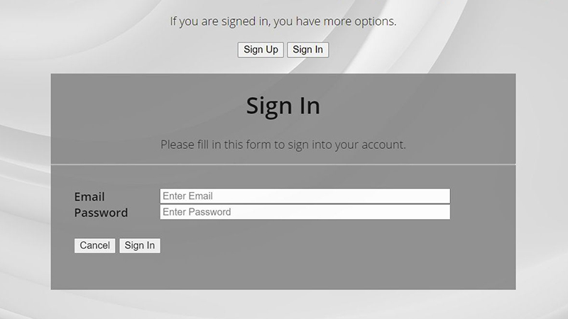
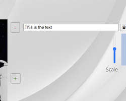

Hilfe
Hier erfährst du, wie du unseren MemeMaker benutzen kannst.
Klicke ein Thema an, um das Thema auszuklappen und weitere Informationen darüber zu erhalten.
Wie kann ich mich einloggen?
Um dich einzuloggen, gehe auf die Login-Seite. Dort kannst du wählen, zwischen:
- Sign Ip (Erneutes Anmelden mit bestehenden Kontodaten): Nach dem Klicken auf den Button kannst du deine Emailadresse und Passwort eingeben, um dich mit Klicken auf das untere "Sign In" einzuloggen.
- Sign Up (Erstmaliges Anmelden auf unserer Seite): Hier kannst du ein neues Konto erstellen.
Wichtig: Gib niemals echte Passwörter/Sensible Daten ein, diese werden im Klartext gespeichert, und unverschlüsselt übertragen.
Die beiden Einträge der Email bzw. Passwort müssen übereinstimmen, sonst wirst du auf den Fehler hingewiesen, und musst diesen erst korrigieren.

Warum sollte ich mich einloggen?
Nach dem Einloggen stehen dir mehr Inhalte zur Verfügung, wie beispielsweise:
- Erstellen eigener Memes
- Voten von Memes
- Hochladen eigener Templates
Wie erstelle ich ein Meme?
Dazu gehst du auf folgende Seite: Meme erstellen. Anschließend kannst du durch Klicken auf "Backgrounds" aus folgenden Templates wählen:
- Einem zufälligen Hintergrund
- Allen Hintergründen
- Zufällige Bilder aus ImgFlip importieren
- Eine URL eines Bildes angeben
- Ein Bild hochladen
- Eine URL eingeben, von der ein Screenshot erstellt wird
Dabei wird jeweils ein Hintergrund direkt in den Generator geladen, und je nach Option kann ein alternativer aus der unten angezeigten Galerie ausgewählt werden.
Anschließend kann über die drei "+"-Buttons Text zum Meme hinzugefügt werden.
| Image |
Action |
|  |
Zunächst wird Text in das Textfeld eingegeben. |
- Mittels B/F//U kann der Text anschließend Fett, Kursiv oder unterstrichen werden.